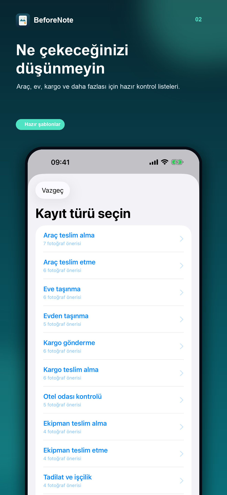

KİRALIK ARAÇ TESLİM ALMA
Yola çıkmadan önce bunları fotoğraflayın.
Aracın teslim anındaki durumunu düzenli biçimde kaydetmek, gördüğünüz ayrıntıları daha sonra hatırlamanıza yardımcı olur. Kontrolü araçtan ayrılmadan yapın; sorunları kiralama şirketine bildirin.
Fotoğraf kontrol listesi
- Kaportanın dört yönü; her panelin görüldüğü geniş açılar.
- Mevcut çizik, göçük ve boya hasarlarının yakın planı.
- Jantlar, lastikler ve görünen hasarlar.
- Ön cam, yan camlar, farlar ve aynalar.
- Koltuklar, gösterge paneli, bagaj ve iç mekân.
- Sözleşmeniz açısından önemliyse yakıt seviyesi ve kilometre.
- Gerekliyse park yeri ve aracın çevresi.
Gördüklerinizi kiralama şirketinin durum formuyla karşılaştırın. Farkları yola çıkmadan yetkiliye bildirin ve sözleşmenizdeki teslim koşullarını izleyin.
iPhone için tek seferlik satın alma. Hesap veya abonelik yok.

Fotoğraflar ve notlar bir arada
BeforeNote'un araç teslim alma şablonu önerilen fotoğrafları notlarınızla düzenler. Kaydı tamamladığınızda uygulamada salt okunur olur; internet olmadan PDF raporu oluşturup saklayabilir veya paylaşabilirsiniz.
Uygulama fotoğraf ve notları cihazda saklar. Dosya bütünlüğü kontrolü noter onayı, doğrulanmış zaman damgası veya hukuki kabul garantisi değildir. Önemli kayıtların kopyalarını saklayın ve kira sözleşmenizin koşullarını izleyin.
Aracı teslim almaya hazır mısınız?
Ayrıntılar gözünüzün önündeyken kaydedin.
BeforeNote'u iPhone'a indirin